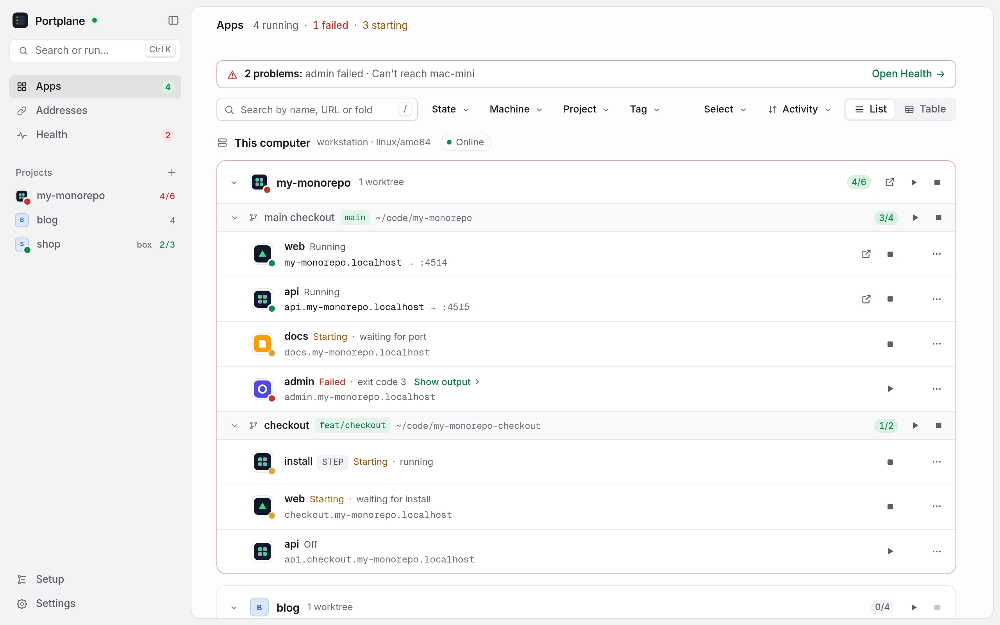

See
Every app's state (on, starting, failed or off), its address and the port behind it, grouped by project and git worktree. Ports opened by anything else show up too.
See what is running across all your project folders and your other machines over SSH. Open each app at a stable https://<name>.localhost address and start or stop it with a click.
Free and open source under Apache-2.0. Every build has signed checksums.

Every app's state (on, starting, failed or off), its address and the port behind it, grouped by project and git worktree. Ports opened by anything else show up too.
Start, stop or restart an app or a whole project. When something fails, its last lines of output are one click away, ready to copy.
Point Portplane at a folder. It finds the apps in your monorepos and worktrees, proposes an address for each and writes plain dekit config after you review it.
Add a machine from ~/.ssh/config or Tailscale. Its servers appear next to yours and open at https://<app>.<machine>.localhost over SSH.
Portplane doesn't run your servers or replace anything. It sits on two small tools and keeps their config plain and yours.
.localhost addresses, the local HTTPS proxy and its trusted certificate.
The latest release, straight from GitHub Releases.
Not notarized by Apple: the first time you open it, go to System Settings → Privacy & Security and choose Open Anyway.
The .deb and .rpm add Portplane to your applications menu and pull in WebKitGTK.
Not code-signed: if SmartScreen warns you, choose More info → Run anyway.
curl -fsSL https://akamachinecode.github.io/portplane/install.sh | shirm https://akamachinecode.github.io/portplane/install.ps1 | iexThe script checks the SHA-256 of what it downloads, and the signature too when cosign is installed. Then open Portplane: its guided setup installs dekit and portless for you. Details in the install guide.